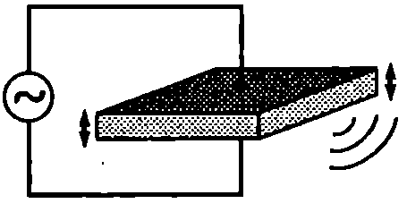

Източници и приемници на ултразвук
Механичните вълни с честота в интервала от 20 kHz ($2.10^4$ Hz) до 1 GHz ($10^9$ Hz) се наричат ултразвук. Вълните с по-висока честота се наричат хиперзвук.
В голяма част от източниците и приемниците на ултразвук се използва пиезоелектричният ефект, който се наблюдава в някои кристали (кварц) и поликристални вещества (бариев титанат). При деформация (свиване или разтягане) на изрязана по подходящ начин пластинка от пиезокристал на противоположните и стени възникват разноименни електрични заряди. Между стените се създава електрично напрежение. Когато свиването се смени с разтягане, знакът на зарядите върху стените се сменя. Наблюдава се и обратен пиезоелектричен ефект пластинката се деформира при прилагане на външно електрично напрежение. Ако напрежението се изменя периодично с честота $\nu$, пластинката започва да трепти със същата честота. На Фиг. \ref{fig:80.1} е показана кварцова пластинка с форма на паралелепипед, върху двете срещуположни стени на която в нанесен тънък слой от метал. Пластинката и металните електроди образуват плосък кондензатор, който се свързва към източник на променливо напрежение. Поради обратния пиезоелектричен ефект пластинката извършва принудени механични трептения. Амплитудата на трептене рязко нараства при резонанс, когато честотата на източника е равна на собствената честота на пластинката: пластинката става източник на ултразвукова вълна с голям интензитет.
В приемниците на ултразвук също се използва пиезоелектричният ефект. Когато ултразвукова вълна попадне върху пиезопластинката на приемника, последната започва да трепти. Между противоположните и стени възниква променливо напрежение, което се регистрира от електронната система на приемника.

`Фиг. 80.1`
Действието на друг вид източници на ултразвук се основава на явлението магнитострикция. Магнитострикция се нарича свойството на някои феромагнитни вещества да променят размерите си при намагнитване. Ако пластинка (или пръчка) от такова вещество се постави в променливо магнитно поле, създадено от намотка, по която тече променлив ток, при пренамагнитването на пластинката възникват механични трептения. Когато честотата на променливия ток е равна на собствената честота на трептене на пластинката, настъпва резонанс, амплитудата на трептене нараства и излъчената от трептящата пластина ултразвукова вълна е с максимален интензитет.
Пример 80.1
В източник на ултразвук се използват надлъжните трептения на кварцова пластинка с дебелина $d = 5$ mm. Определете честотата на ултразвука. Скоростта на надлъжните механични вълни в кварц е $u = 5500$ m/s. \end{psexample}
Решение
Подобно на въздушния стълб в цилиндрична тръба с два отворени края (вж. Фиг. \ref{fig:79.1} на стр. 152), надлъжните стоящи вълни на отклонението в кварцовата пластина имат върхове върху срещуположните свободни повърхности на пластинката. Следователно: $$\lambda_1 = 2d;\ \nu_1 = \frac{u}{\lambda_1} = \frac{u}{2d} = 550~\mathrm{kHz}$$
Трептенията на пластинката предизвикват излъчване на ултразвукова вълна със същата честота (550 kHz). За получаване на ултразвукови вълни с по-високи честоти се използват висши хармонични на основната собствена честота на пластинката.
Ултразвукова локация
Ултразвукът слабо се поглъща от водата и се използва за подводна сигнализация, за откриване на предмети под водата и за изследване релефа на морското дъно. Принципът на действие на ултразвуковия локатор (ехолот) се основава на отражението на звуковите вълни. Излъченият ултразвуков сигнал достига до търсения обект, отразява се от него и попада в приемника. Като се знае времето за отиване и за връщане на сигнала, се определя разстоянието до обекта. Чрез ултразвукова локация се откриват подводни лодки, рибни пасажи, айсберги и др.
Ултразвуковата локация се използва от някои животни при движение и търсене на храна. Гласовият орган на различните видове прилепи генерира ултразвукови импулси с продължителност от 1 ms до 15 ms и честота между 20 kHz и 100 kHz. За 1 секунда се излъчват от 10 до 100 такива импулса, които се отразяват от околните тела и се възприемат обратно от при лепа. По този начин той получава подробна информация за заобикалящата го среда, което му дава възможност свободно и сигурно да лети в тъмните пещери.
Ултразвукови сигнали използват също делфините, някои видове лястовици, птиците Steatoius carpensis и др.
Ултразвукова диагностика
Когато механична вълна достигне границата на две среди, тя частично се отразява и частично преминава във втората среда. Интензитетът на отразената вълна зависи от плътностите на двете среди, от скоростите на вълната в тях и от ъгъла на падане. Доказва се, че в частния случай, когато вълната пада перпендикулярно на границата, отношението на интензитета $I$ на отразената вълна и интензитета $I_0$ на падащата вълна се изразява с уравнението $$\frac{I}{I_0} = \left(\frac{u_1\rho_1-u_2\rho_2}{u_1\rho_1+u_2\rho_2}\right)^2 $$ където $u_1$ и $u_2$ са скоростите на звука в двете среди, а $\rho_1$ и $\rho_2$ — плътностите на средите. Скоростта на звука в меките тъкани на човешкото тяло е приблизително еднаква, затова интензитетът на отразената от границата на две тъкани вълна се определя главно от разликата в тяхната плътност.
Отражението на ултразвука се използва за медицинска диагностика. От източник се изпращат къси ултразвукови импулси, които частично се отразяват от границите на областите на тялото с различна плътност. Между два последователни импулса източникът работи в режим на приемник, регистрира отразените вълни (ехо) и ги преобразува в електрични сигнали, които носят информация за формата и положението на отразяващите граници. Отражение от малки обекти е възможно само ако дължината на вълната е по-малка от размера на обекта. Това налага използване на механични вълни с висока честота (малка дължина на вълната), т.е. на ултразвук. За да се постигне висока разделителна способност на ултразвуковите методи на диагностика, трябва да се използват вълни с възможно най-висока честота. От друга страна, поглъщането на ултразвука от тъканите нараства при увеличаване на честотата. За да имат отразените от вътрешните органи високочестотни вълни достатъчен за регистрирането им интензитет, необходимо е да се използват по-мощни източници на ултразвук. Тук също съществуват ограничения, тъй като ултразвук с голям интензитет оказва вредно въздействие върху организма. В съвременните ултразвукови томографи (скенери и др.) се постига оптимално съчетаване на взаимно противоречивите изисквания за голяма разделителна способност (наблюдаване на най-малки детайли), възможност за проникване на вълните на голяма дълбочина в тялото и същевременно пълна безвредност на ултразвуковото облъчване за пациента.
Пример 80.2
Плътностите на две мускулни тъкани са $\rho_1$ = 1026 kg/m$^3$ и $\rho_2$ = 1068 kg/m$^3$. Определете отношението на интензитетите на отразената от границата на двата мускула вълна и падащата ултразвукова вълна. Приемете, че скоростта на звука е еднаква в двете тъкани, а падащата вълна се разпространява перпендикулярно на границата. \end{psexample}
Решение
Заместваме $u_1 = u_2$ във формула \eqref{eq:80.1} и определяме отношението на интензитетите на отразената и падащата вълна: $$\frac{I}{I_0} = \left(\frac{\rho_1 - \rho_2}{\rho_1 + \rho_2}\right)^2 = 0,!0004.$$
Следователно интензитетът на отразената вълна е само 0,04% от интензитета на падащата вълна, но той е достатъчен, за да може отразената вълна да бъде регистрирана от чувствителен приемник.
Ултразвук с голям интензитет
Разрушителното действие на ултразвукови вълни с голям интензитет намира приложение в хирургията и неврохирургията за унищожаване на тумори, камъни в бъбреците и други образувания. Ултразвуковите вълни се фокусират в една малка област, където достигат голям интензитет и унищожават тъканта само там, без да оказват въздействие на съседните области. Например в мозъка с ултразвук се унищожават центрове на болестта на Паркинсон.
Под действието на ултразвук в течности се наблюдава явлението кавитация (от лат. cavitas - празнина, кухина). Когато амплитудата на налягането на ултразвука надминава някаква критична стойност $p_\text{к}$ във фазата на разреждане ултразвуковата вълна създава толкова ниско налягане, че непрекъснатостта на течността се нарушава и се образуват вакуумни микрошупли (мехурчета). Веднъж възникнали, мехурчетата извършват пулсации при промяна на звуковото налягане. Когато налягането намалява, те се разширяват. Чрез дифузия разтворените в течността газове запълват мехурчетата. В мехурчетата постъпват и пари на течността. Когато звуковото налягане нараства, мехурчетата се свиват и след като достигнат някакъв минимален радиус се спукват, т.е. изчезват. Ще отбележим, че за разлика например от сапунения мехур, който се спуква навън при разширение, кавитационното мехур че се спуква навътре при свиване. В резултат на рязкото адиабатно свиване, за което съществена роля играят и силите на повърхностно напрежение, температурата на газовете и парите в мехурчетата достига до 10 000 К. Високата температура причинява частично атомизиране и йонизация на газовете и парите. Освен това пулсациите и спукването на мехурчетата пораждат мощни микропотоци от молекули на течността с високи енергии, които заедно с отделените йонизирани газове оказват разрушаващо действие върху повърхността на телата, намиращи се в областта на кавитация. Извършва се кавитационна ерозия, при което се разрушава повърхностният слой на твърдите тела.
В специални ултразвукови вани кавитацията се използва за почистване на различни повърхности, медицински инструменти и детайли със сложна форма, съдържащи множество цепнатини и пори, които трудно биха могли да се почистят по друг начин. Кавитационното почистване има и това предимство, че се унищожават различни видове микроорганизми и се постига стерилизация. Освен това кавитацията се използва за фино диспергиране на течни или твърди вещества в течни или газови среди. Така се приготвят стабилни суспенсии и емулсии и много фини аерозоли за борба с вредителите по растенията и домашните животни, за инхалационна терапия на белите дробове и др.
Пример 80.3
Оценете минималния интензитет $I_\text{к}$ на ултразвук, който предизвиква кавитация във вода при нормално атмосферно на лягане $p_0 = 10^5$ Pa. Скоростта на ултразвука във вода е $u = 1500$ m/s, плътността на вода та е $\rho = 1000~\mathrm{kg/m^3}$. \end{psexample}
Решение
Големината на критичното налягане $p_k$ на ултразвука, при което започва кавитацията, зависи от много фактори: съдържание на газове и примеси в течността, температура, честота и продължителност на звуковото въздействие, пространствено разпределение на интензитета на звука и др. Като груба оценка обаче можем да приемем, че кавитацията започва, когато амплитудата на ултразвуковото налягане стане равна на външното атмосферно налягане. За плоска хармонична вълна амплитудата на налягането и интензитетът са свързани със съотношението \eqref{eq:78.10}. Следователно: $$I_\text{к} = \frac{p_k^2}{2\rho u} = \frac{(10^5~\mathrm{Pa})^2}{2(1000~\mathrm{kg/m^3})(1500~\mathrm{m/s})} = 3~\mathrm{\frac{kW}{m^2}}.$$
Инфразвук
Границите на честотния интервал, в който механичните вълни се наричат инфразвук, не са точно определени. Обикновено за горна граница на инфразвуковия диапазон се приемат честотите 15-40 Hz, а долната граница в някои съвременни изследвания достига до 0,001 Hz. Естествени източници на инфразвук са изригващите вулкани, земетресенията, морските вълни, ветровете и др. С човешката дейност са свързани други източници на инфразвук: взривове, оръдейни изстрели, акустично излъчване на реактивни двигатели и др. Инфразукови компоненти съдържат шумовете, произвеждани от машини и съоръжения, от транспорта и др. Установено е, че инфразвук с голямо ниво на интензитета (над 120 dB) оказва вредно въздействие върху човешкия организъм.
Поради ниската си честота инфразвуковите вълни много слабо се поглъщат и отразяват от атмосферата, водата и земната кора. Всички звукоизолиращи материали губят своята ефективност и не представляват преграда за инфразвука. Например при изригване на вулкан инфразвукът многократно обхожда земното кълбо. Свойството на инфразвуковите вълни да се разпространяват на големи разстояния намира редица приложения. Ще се спрем на едно от тях.
Отделянето на въглероден диоксид (CO$_2$) и на някои други газове в атмосферата е свързано с повишаване на температурата както на атмосферата, така и на океана (парников ефект). Изчислено е, че ако го нямаше океанът, температутата на атмосферата би нараствала три пъти по-бързо при еднакви останали фактори. Измерването на средната температура на океана е затруднено поради нейните локални изменения, предизвикани от множество фактори. Необходим е метод за определяне на средната температура за много голяма област от океана. За тази цел се използват т. нар. акустични канали в океана, разположени на дълбочина около 1 km. Скоростта на механичните вълни във вода зависи от температурата и налягането, които в океана се изменят с дълбочината. В резултат на тези изменения се оказва, че на някаква дълбочина скоростта на вълните е минимална. Областите с минимална скорост на звука образуват дълги канали, в някои случаи обхващащи половината от земното кълбо, по които могат насочено да се разпространяват инфразвукови вълни. На единия край на канала се поставя мощен източник на инфразвукови импулси. Приемникът, разположен на другия край на акустичния канал, регистрира импулса и се измерва времето за неговото разпространение. По намаляването на времето за разпространение от година на година се прави извод за нарастването на средната температура на океана, предизвикано от парниковия ефект.
Пример 80.4
За изследване на парниковия ефект в използван акустичен канал с дължина $L = 18,000$ km. През голям интервал от време са проведени две групи измервания. Установено е, че при вторите измервания времето за разпространение на инфразвуков импулс по канала намалява с $0,!5$ s. Определете нарастването на средната температура на океана за изследвания период от време. Скоростта на инфразвука е $u = 1500$ m/s и нараства с $4,!6$ m/s при увеличаване на температурата с $1$ К (${du}/{dT} = 4,!6$ m/(s$\cdot$K)). \end{psexample}
Решение
Импулсът изминава разстоянието $L$ за някакво време $t$, ако се движи със скорост $u$: $L = ut$. Ако скоростта нарастне с $\Delta u$, времето намалява с $\Delta t$: $L = (u + \Delta u)(t - \Delta t)$. От горните две равенства, след като пренебрегнем едночлена $\Delta u \Delta t$, който е много по-малък от останалите едночлени, получаваме $$\Delta u = \frac{u^2 \Delta t}{L} = 0,!06,\text{m/s}.$$ Изменението на средната температура на океана за интервала от време между двете измервания е $$\Delta T = \frac{\Delta u}{{du}/{dT}} \approx 0,!014,\text{K}.$$
Задачи
-
Ултразвукова вълна с интензитет $I_0 = 2~\mathrm{W/m^2}$ която се разпространява във въздуха, попада перпендикулярно върху плоска водна повърхност. Определете интензитета $I_1$ на отразената вълна и интензитета $I_2$ на вълната, която преминава във водата. Скоростта на ултразвука е $u_1 = 340~\mathrm{m/s}$ във въздуха и $u_2 = 1500~\mathrm{m/s}$ във водата. Плътността на въздуха са съответно $\rho_1 = 1, 2~\mathrm{kg/m^3}$ и $\rho_2 = 1000~\mathrm{kg/m^3}$
-
Ехолот регистрира отразения от кит ултразвуков импулс 0,8 s след неговото излъчване. Колко е разстоянието от кораба до кита? Скоростта на ултразвука $u = 1500~\mathrm{m/s}$